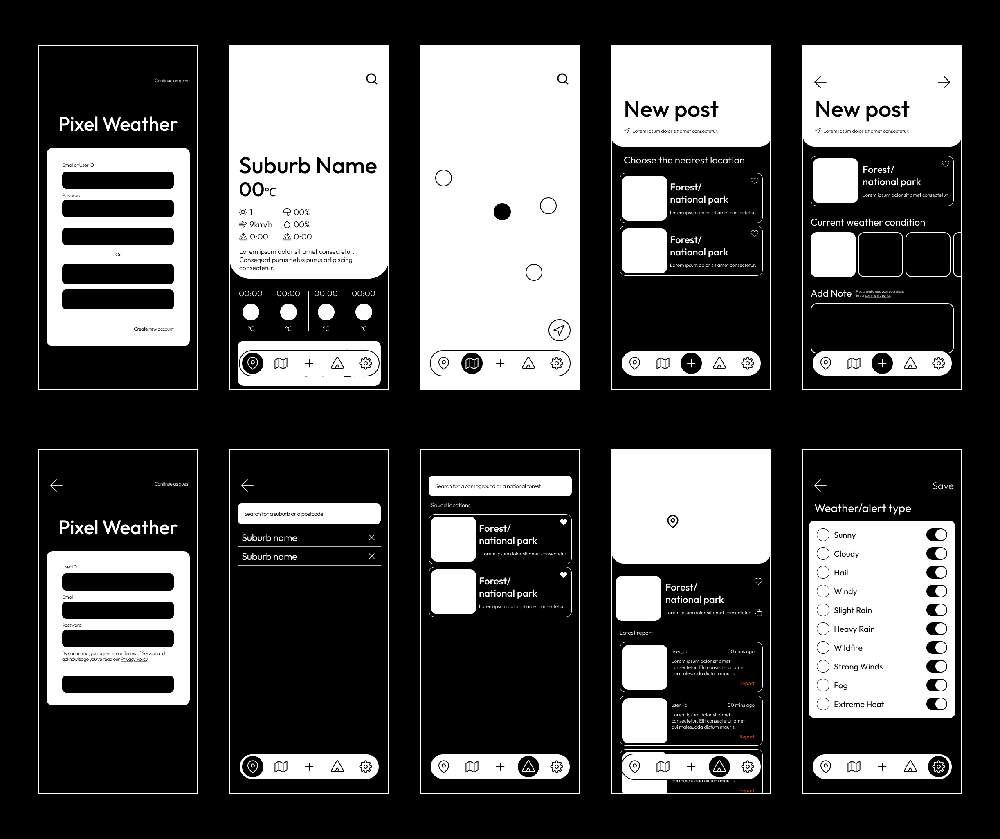

#UI/UX #Mobile
Tools used: Adobe Illustrator, Photoshop, Figma
Traditional weather apps often rely on automated data that may not accurately reflect hyperlocal, real-time weather conditions, especially in outdoor settings like campgrounds, hiking trails, and remote areas. This lack of precision can make it challenging for outdoor enthusiasts—like hikers and campers—to plan their activities safely. Compared to other Australian weather apps like Weather Zone, many existing apps offer limited community-driven insights, meaning users miss out on firsthand weather reports from people who are actually on-site.
The solution aims to provide outdoor enthusiasts with a weather app to share real-time updates on weather and conditions at campsites, forests, trails, and other outdoor locations, helping them stay informed and prepared for the rapidly changing weather across Queensland.
Core Features
Real-Time Weather Updates
The homepage will present the current weather of the user's location, using large, identifiable weather icons and a light, high-contrast color palette for a stylish, easy-to-read design.Map-View Weather Reports
Allows users to explore nearby weather conditions in real-time, helping them stay informed. The interactive map provides an overview of current conditions across various locations, ensuring users are always up to date.Share & Update
Users can enhance the accuracy of weather updates by contributing to the community. They can create new posts by selecting a weather icon and adding helpful suggestions, as accurate weather information is crucial for outdoor enthusiasts.Community-Drive Weather Insights
The community feature allows users to view the latest updates from recent visitors at outdoor locations like forests, national parks, campgrounds, and hiking trails. These updates ensure users stay informed.User Flow
The user flow chart outlines how visitors will interact with the app, whether they sign in or use it as a guest. A guest mode is included because many users prefer not to create an account or sign up for a new service when first using an app. In the flow chart, rounded rectangles represent screens, while diamond shapes indicate interactions between the user (or guest) and the app. The diamond shapes may also represent buttons or other elements that users can interact with.
Wireframes
These wireframes showcase the key screens for Pixel Weather. The Home screen provides users with comprehensive weather data and forecasts. The Map offers a convenient way for users to explore nearby locations and view their weather conditions through intuitive icons. The Add Post feature allows users to share real-time, firsthand information based on outdoor activity locations. The process begins with users selecting a location, followed by choosing the current weather conditions. This helps ensure accurate, up-to-date information. Users can also add a note to provide additional context and inform others about the conditions at the location. For users looking to stay informed, the Community section offers the latest updates from other users. Additionally, Personalized Alerts enable users to track specific weather types, with a focus on extreme conditions like hail, extreme heat, heavy rain, and strong winds.
